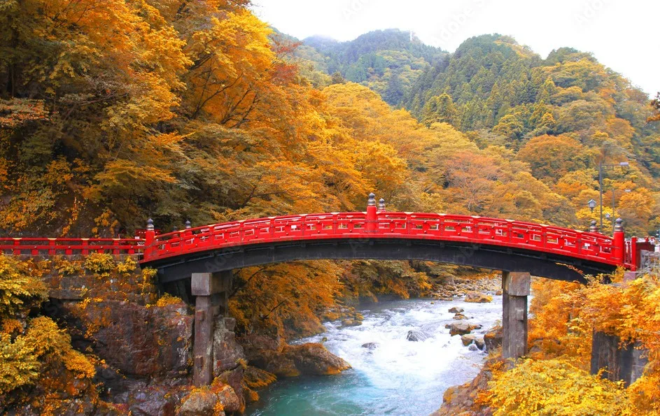
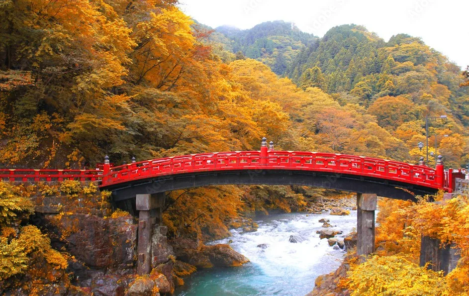
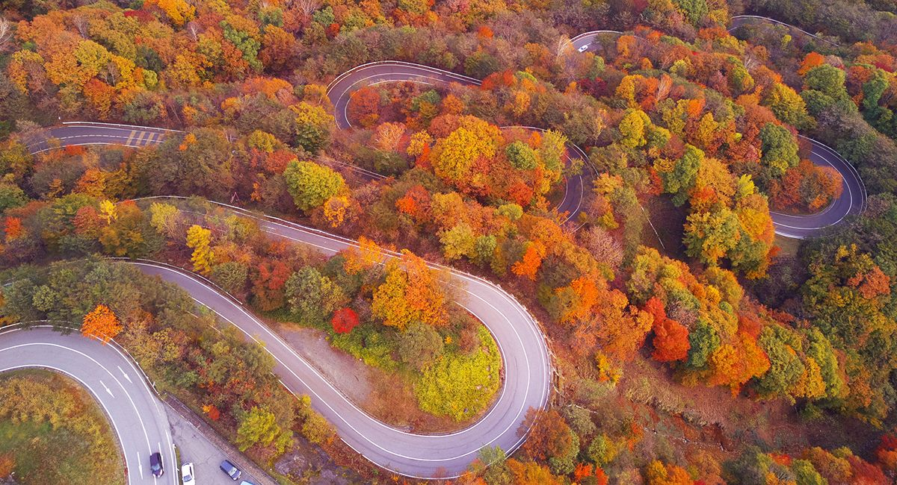
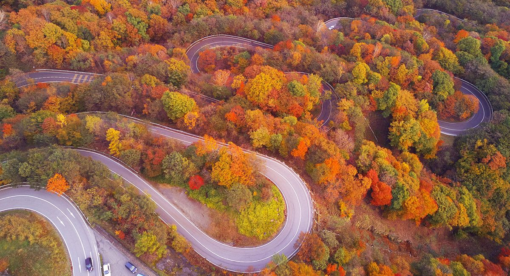
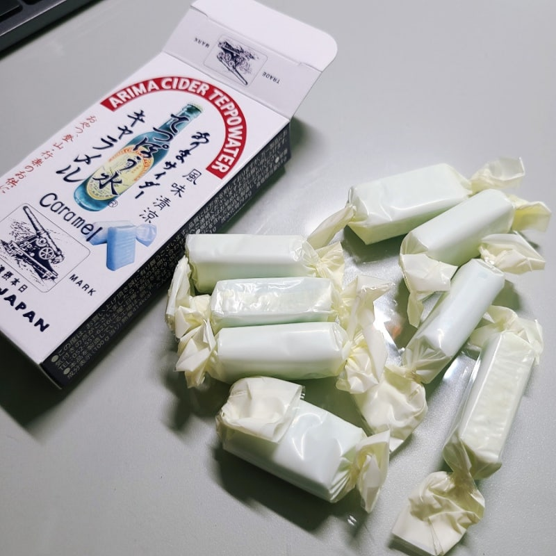
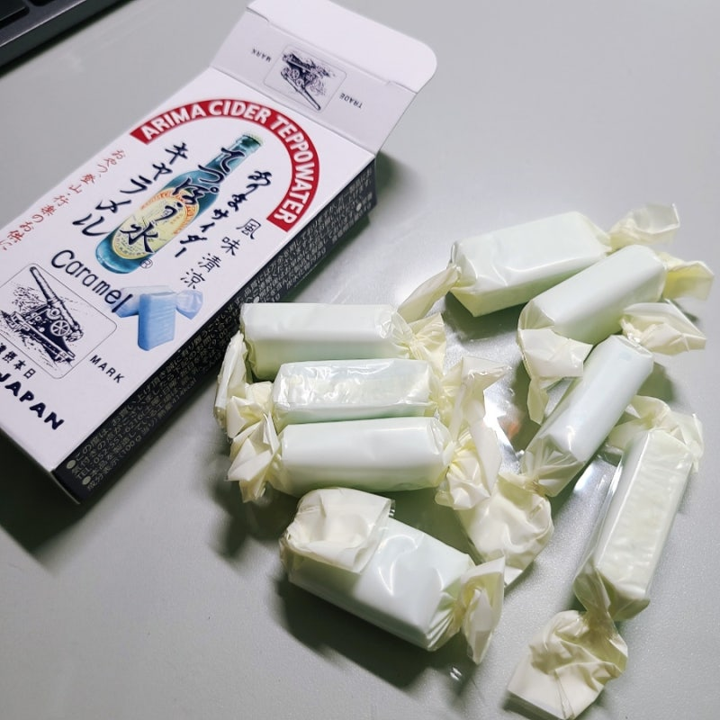

지역&온천
도쿄 근교의 단풍 명소로, 역사와 자연이 어우러진 도시입니다.
주젠지호와 기누가와 온천에서 가을 정취 속 힐링을 즐길 수 있습니다.
사찰과 온천이 조화를 이루어 여행객들에게 인기가 많습니다.
도쿄 근교의 단풍 명소로, 역사와 자연이 어우러진 도시입니다.
주젠지호와 기누가와 온천에서 가을 정취 속 힐링을 즐길 수 있습니다.
사찰과 온천이 조화를 이루어 여행객들에게 인기가 많습니다.
닛코 도쇼궁 - 화려한 건축과 유네스코 세계유산으로 유명합니다.
게곤폭포 - 일본 3대 폭포 중 하나로, 가을 단풍과 어우러진 절경입니다.
이로하자카 - 48개의 커브로 이어진 길, 단풍 드라이브 명소입니다.
 

 

← 드래그 해보세요 →
유바 요리 - 두부 껍질로 만든 닛코의 대표 음식입니다.
단풍 모양 과자 - 가을 단풍을 형상화한 전통 디저트입니다.
← 드래그 해보세요 →

단풍의 신들
옛 신들이 산을 지키며 단풍을 물들였다는 전설이 전해집니다.
폭포와 호수는 신령이 깃든 신성한 공간으로 여겨졌습니다.
지금도 닛코는 신비로운 기운이 머무는 성지로 알려져 있습니다.
효고현 고베 인근의 전통 온천 마을로 교통이 편리합니다.
‘금탕’과 ‘은탕’ 두 가지 온천수로 치유와 미용 효과가 있습니다.
가을 단풍과 함께 온천을 즐길 수 있는 명소로 알려져 있습니다.
아리마 온천 거리 - 전통 가옥과 상점이 이어진 고즈넉한 거리.
타이코바시 & 네네바시 - 마을의 상징적인 다리와 산책로.
로프웨이 전망대 - 고베와 산의 경치를 조망할 수 있는 명소.

← 드래그 해보세요 →
탄산 센베이 - 아리마 특산 바삭한 과자
아리마 우동 - 산초를 활용한 아리마 지역만의 특색 향토 요리
아리마 사이다 - 아리마 지역 전통 탄산음료
 

← 드래그 해보세요 →
금탕과 은탕
아리마의 두 온천수는 신들의 선물이라 전해집니다.
금탕은 치유, 은탕은 장수를 상징하며 예부터 사랑받았습니다.
오늘날에도 건강과 회복을 기원하는 온천으로 명성이 이어집니다.